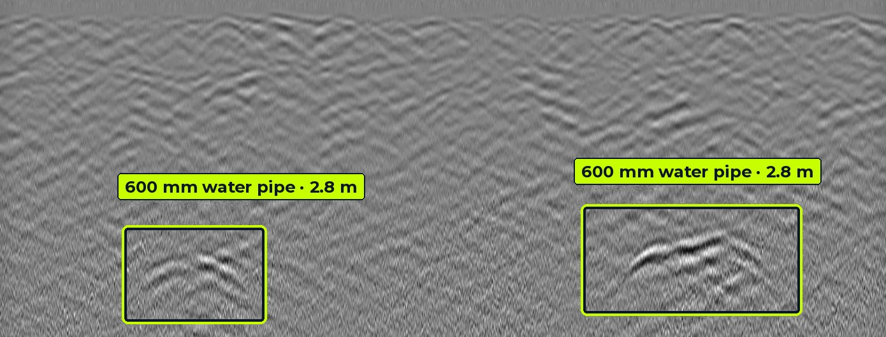
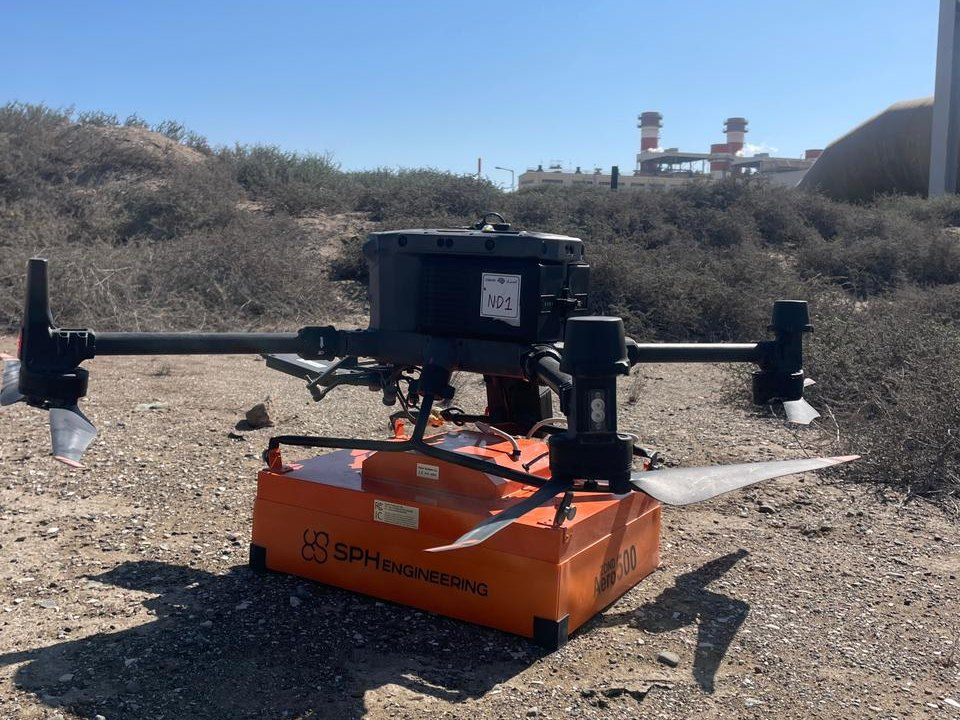
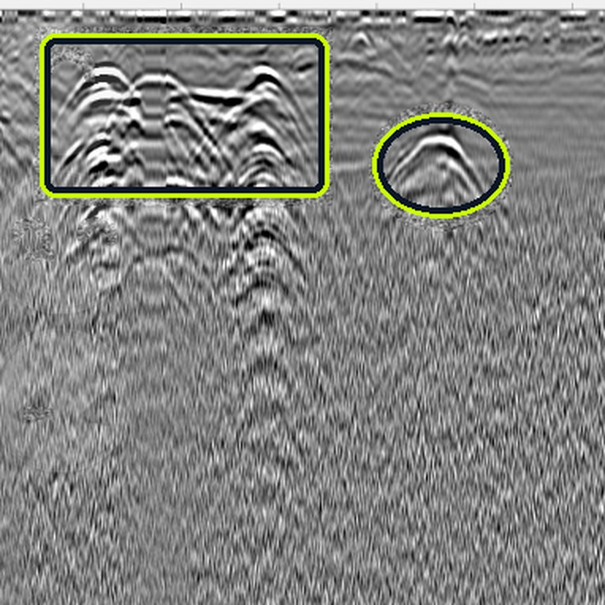
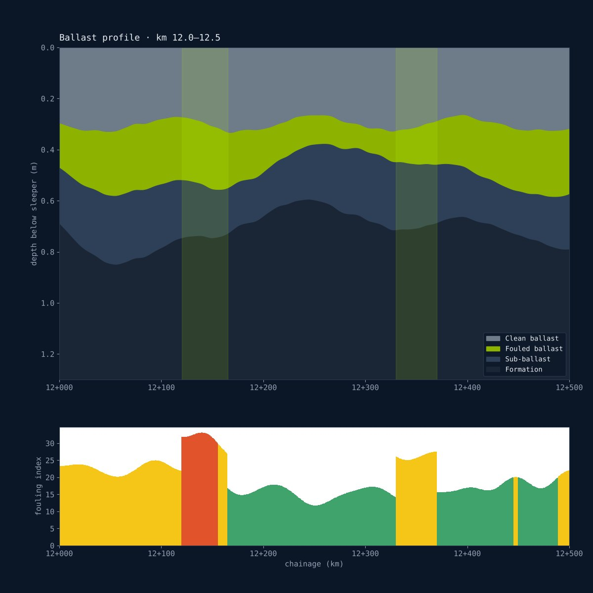
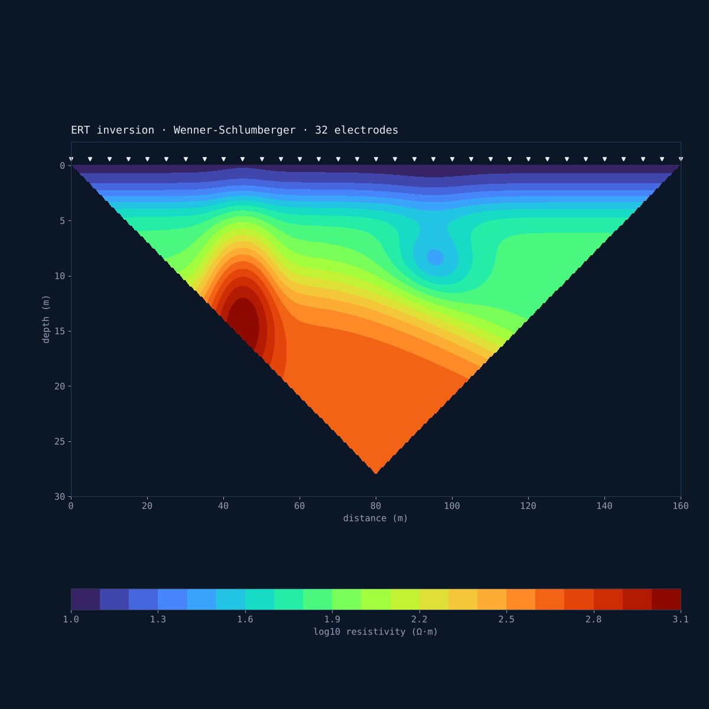
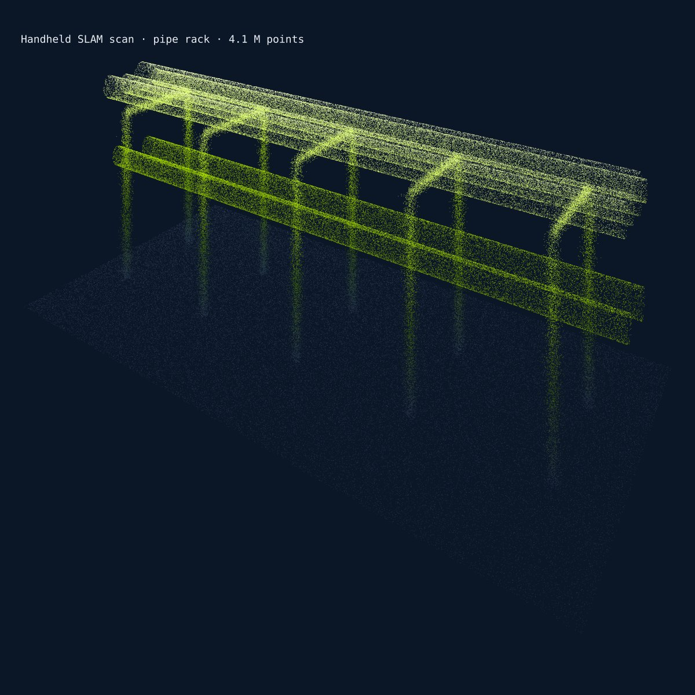

See what lies beneath before you build.
Aviqor Mapping is a Hyderabad-based GPR survey company. We deliver GPR utility detection, railway ballast investigation, structural scanning, ERT, SRT, MASW and 3D laser scanning, with consultant-led interpretation that turns subsurface data into decisions.
Subsurface answers for infrastructure that cannot afford surprises
One team for non-destructive testing, geophysics and survey, so the data from every method fits into one clear picture of your site.

GPR utility detection
Locate and map buried pipes, cables and ducts before excavation, with depth estimates and CAD/GIS utility drawings.
Learn more
Railway ballast investigation
Vehicle-coupled GPR along rail routes to measure ballast thickness, fouling and formation condition kilometre by kilometre.
Learn more
Structural scanning
Rebar layout, concrete cover, slab thickness, post-tension cables and voids, so coring and drilling are safe.
Learn more
GPR consultancy
Independent GPR specialists who plan surveys, review third-party data and sign off interpretations you can build on.
Learn more
ERT · SRT · MASW
Resistivity and seismic methods for bedrock depth, groundwater, cavities, rippability and Vs30 site classification.
Learn more
Topographic & 3D laser scanning
Topographic surveys and handheld 3D laser scanning for as-built models, point clouds and BIM-ready deliverables.
Learn moreRecent GPR results
Radargrams from our own surveys, with each detected service picked and its depth measured.



Our crews at work
Ground-based and drone-mounted GPR surveys, positioned with GNSS, across desert, plant and mountain terrain in Oman.


GPR data is only as good as the person reading it
A radargram shows reflections, not labelled pipes. Soil moisture, clay, reinforced slabs and closely spaced services all change what the signal means. A consultant chooses the right antenna, calibrates depths against trial pits and separates real targets from noise.
- Survey design matched to soil, depth and target size
- Velocity calibration so depths are measured, not assumed
- Cross-checks with electromagnetic locators and records
- Reports aligned to ASCE 38-22 quality levels and PAS 128
Records only
Existing drawings and verbal information. Often incomplete or out of date.
Visible features
Records plus surveyed manholes, valves and chambers on site.
Geophysical designation
GPR and EM locating map services horizontally with depth estimates. This is where Aviqor works.
Exposed and verified
Trial pits or vacuum excavation confirm exact position. We plan these where risk demands it.
What our data looks like
Every survey ends in clear engineering outputs: picked radargrams, ballast condition profiles, resistivity sections and 3D point clouds.




GPR radargram from an Aviqor survey; other panels are illustrative samples.
Where our work makes a difference
Roads & highways
Utility mapping for widening and junction works, pavement layer checks.
Metro & railways
Ballast and formation surveys, utility clearance along corridors and stations.
Smart cities
Underground asset mapping and GIS-ready utility databases for city bodies.
Industrial plants
Safe-dig surveys inside operating plants with dense, live services.
Oil & gas fields
Pipeline and cable detection across desert concession areas in Oman.
Buildings & bridges
Structural scanning before coring, anchoring and retrofitting.
Field-proven in India and Oman
Our engineers have worked on national road projects, metro and smart city programmes in India, and across PDO areas and the Hafeet Rail project in Oman.
India
IN · HQ HYDERABAD- Road & highway projectsMultiple states
- Metro rail projectsUtility clearance
- Smart city projectsUtility mapping
- Industrial facilitiesIn-plant surveys
Oman
OM · FIELD OPERATIONS- PDO concession areasAcross Oman
- Hafeet Rail projectOman–UAE rail
- Projects outside PDOInfrastructure & industry